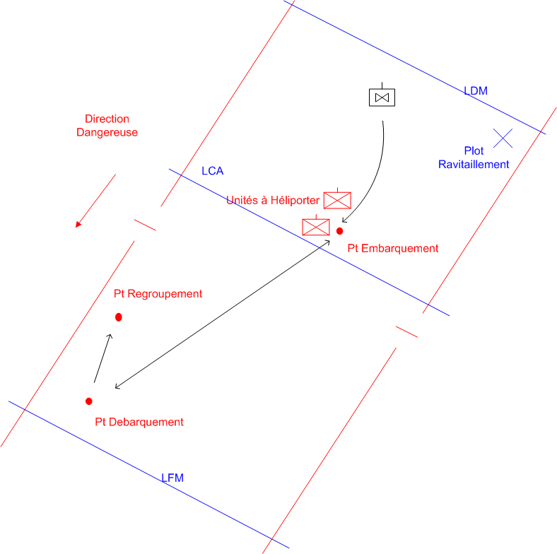

NIVEAU :Automate
ARME :ALAT
MISSION :Heliporter Helitransporter
Objectif principal
- Tansporter
Modalités d'exécution
-
Les unités amies doivent avoir reçu l'ordre de "Se Faire Transporter" ;
-
Le premier échelon reçoit la mission "héliporter hélitransporter" ;
-
Le deuxième échelon escorte et couvre le premier échelon ;
-
Les autres pions gèrent la logistique interne du sous-groupement : création de plot de ravitaillement et IMEX ;
-
Pendant toute la durée de la mission, l'automate gère les ravitaillements et les adaptations du dispositif pendant ceux-ci ;
-
A la fin de la mission quand toutes les unités amies ont été transportées ou sur ordre de conduite Interrompre, les unités se rassemblent au point de regroupement.
Schéma de modélisation

Paramètres obligatoires
Fuseau : Limite gauche / Limite droite : Zone de responsabilité.
Point de regroupement : Le point à rejoindre en fin de mission.
Point de débarquement : Position ou l'unité transporter sera débarquer.
Plots de ravitaillement : Les plots passés en paramètre pouront être utilisés dans le cadre de la mission. Cette liste est automatiquement mise à jour avec les plots créés dans le fuseau de la mission.
Paramètres optionnels
Limas [LDM/LFM] pour orienter le fuseau
Direction Dangereuse : Orientation privilégiée des capteurs lors de bond ou de reconnaissance de points